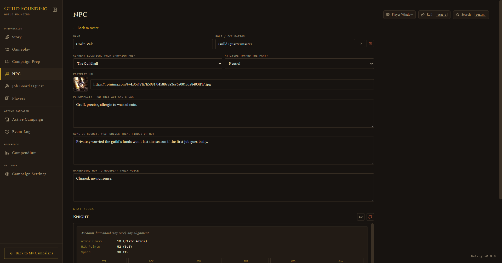
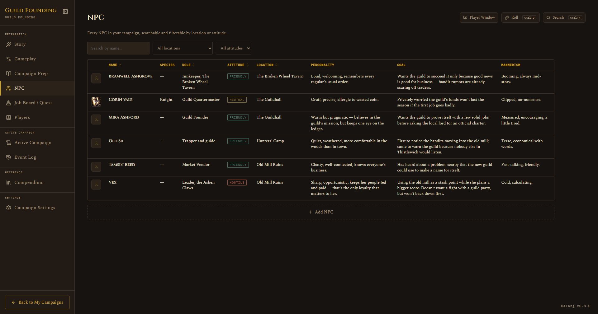

NPC
Preparation · NPC
On this page The roster Linking a monster for combat stats
The roster
A sortable table (Name, Role, Attitude, Location), with search and filter dropdowns. Click a row to open the full NPC sheet: personality, goal or secret, mannerisms, attitude toward the party, and which location they're tied to. Each NPC can also have a portrait, same Load-or-Browse field as everywhere else, with a live preview right next to it, and a thumbnail shows on the table too. The same portrait shows up on that NPC's token wherever they're added to a map.


Linking a monster for combat stats
An NPC on its own has no combat stats, no hit points, no initiative modifier, nothing. That's fine for an NPC who never fights, but the moment you want to drop one into an encounter (a guard captain who turns hostile, a rival adventurer who ambushes the party), you need real numbers behind them.
Rather than duplicating an NPC as a separate monster, you can link the NPC directly to a Compendium entry, official SRD or your own homebrew, and the NPC borrows that entry's full stat block from then on.
- Open the NPC's detail sheet and find the Stat Block section.
- If nothing's linked yet, you'll see a dashed Link a monster button. Click it.
- Search across one combined, alphabetical list of every SRD and homebrew monster, official and homebrew results are tagged so you can tell them apart, then pick one.

Once linked:
- The NPC roster table gets a new Species column, showing the linked monster's name (or a plain dash if there's nothing set).
- The Stat Block section shows the full embedded stat block, with buttons to change the link or unlink it.
- If the NPC has no portrait of its own, it falls back to the linked monster's portrait, same idea as every other portrait fallback in the app.
- Add the NPC to a fight and it now gets real hit points, a real initiative roll from the linked monster's Dex modifier, and the full stat block in the combat token popup, exactly like adding an SRD or homebrew monster directly.

If you later delete the linked monster from the Compendium, the NPC doesn't lose its identity, it keeps a snapshot of the monster's name and shows a small "no longer in the Compendium" note instead of the live stat block. Nothing crashes, you just won't get real combat stats from it anymore until you link a replacement.
See also: Compendium for how SRD and homebrew monsters work, and Running a Live Session for how a linked NPC behaves once it's actually in a fight.